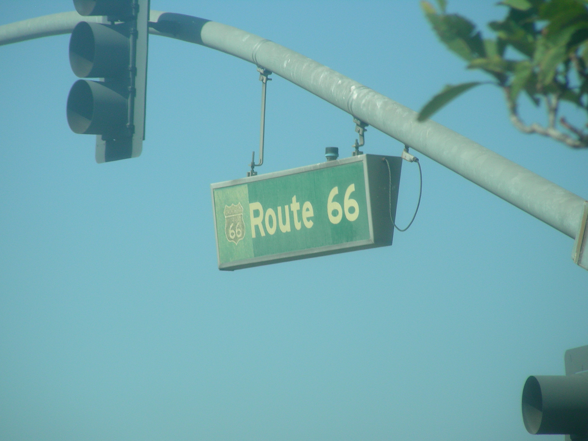
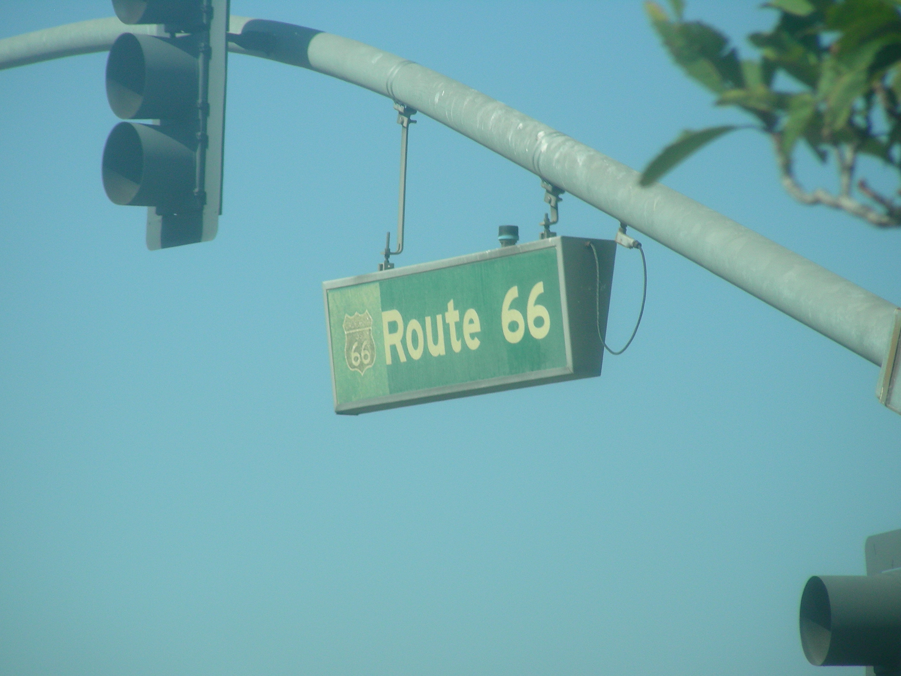
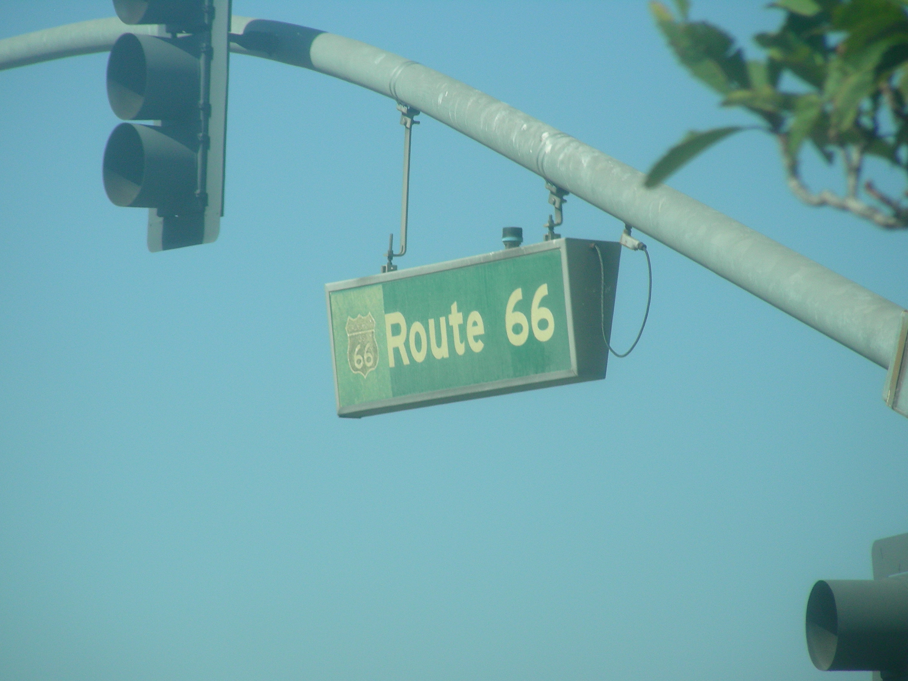
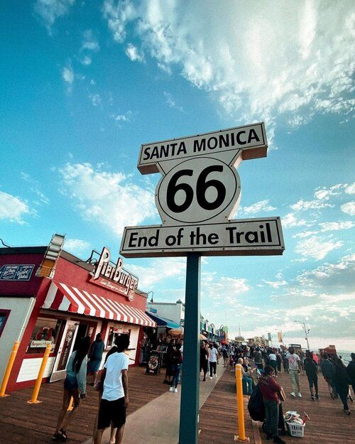
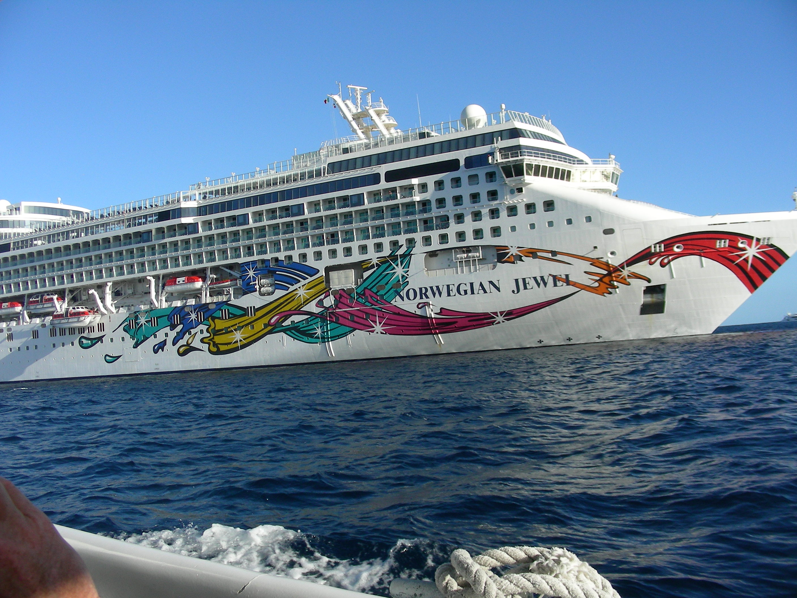

 onut
Man
onut
ManDay 10 Tuesday Nov 1
San Bernardino, CA to LA pier to San Padro, Ca 122 miles
Attractions-
Original McDonald;s and Site Museum
Donut Man- Ate a footlong donut
Must See Original McDonalds
In my opinion the Mcdonalds is a vital part of Americana, right along with Elvis and Graceland, Grand Canyon and Route66. It defines our American Culture. They are all important elements of our History.
We arrived at the Original McDonalds site in San Bernardino, now converted to a Museum. They have everything relating to McDonalds, and more. We highly recommend this stop. It is magnificent. We spent a couple of hours there, and could have spent a couple more.
D

onut
Man
We stopped at the famous Donut Man shop and had some donuts and coffee. We also met some nice Northern California folks. We ate our donuts and had a real nice conversation. We talked about our Route66 trip, since they were interested in doing it, California to Chicago.
E nd Of The Line
From the Donut Man we continued down Route66 through LA. We drove down Sunset Blvd., turning into Santa Monica Blvd, passing Beverly Hills; Ending at the Santa Monica Pier. We did it!
Note: Of course there’s tons of stuff to do in Los Angeles. You could easily spend a few days taking in all the sights and history of Los Angeles. We were anxious to get checked into our room in San Pedro and be ready for our cruise.

Port Of Los Angeles
Our Cruise Ship the Norwegian Jewel was located at the Port of Los Angeles, which is actually in San Pedro, California, south of Los Angeles. Dorreen had booked a room in a Motel6 Suites, Hotel/Motel, right across from the port. We didn’t know what to expect, since we’d never been to the Port Of La. Being from Chicago, knowing the City and the Airports, we were prepared for a rough time finding the place, parking, etc.
But we were pleasantly surprised. We ended up at the Motel6, which was directly across from the port. We could literally just walk across the street to the Port, if we wanted to. We had one free day before we boarded for the Cruise. We decided that we would check out the port the next day and find out about parking and any other particulars. We settled in our room(it was nice), and ventured out looking for a good place for Dinner.
E xcellent Ending For An Excellent Day
We drove around the area by our Hotel looking for an interesting place to eat. There are a lot of choices close by. We settled on The Think Cafe and were not disappointed. It’s a very cute restaurant with a nice bar and great food. From here; Nighty Night.